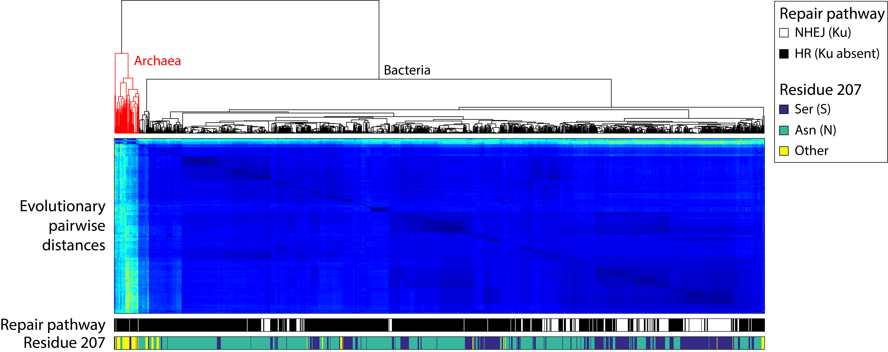

RecA S207 Loop2 analysis
Finding orthologs
Orthologous genes of M. smegmatis RecA (MSMEG_2723) were obtained through OrtholugeDB, which uses a reciprocal BLAST-based algorithm to ensure validity of the orthologous sequences. Briefly, the top BLAST results from an initial search are BLASTed back against the original reference genome, and the results are only counted as orthologs if the top hit in this second search corresponds to the initial sequence of interest. This approach was applied to both recA and ku.
All reciprocal Ortholuge results lacking a taxonomy ID (yielding it impossible to identify the species of origin bioinformatically) were disregarded. The recA and ku databases were subsequently intersected. Organisms that had both recA and ku coding sequences were considered capable of NHEJ; all others were considered to be capable only of HR. Using taxonomy IDs the KEGG database was then queried for recA protein-coding nucleotide sequences.
Additionally, we used BLAST and OrtholugeDB to look for organisms that contained Ku, a unique marker of NHEJ in bacteria and archea. This list of organisms was compared with the list of RecA orthologs, and was used to extrapolate whether or not organisms rely solely on HR for DNA repair, or also have NHEJ.
In order to account for both synonymous and non-synonymous mutations, nucleotide sequences for all organisms were translated into protein sequences, then aligned by Muscle, and finally re-translated back to nucleotide sequences using MEGA6. This multiple alignment was used to test 24 nucleotide substitution models, and the model with the lowest Bayesian information criterion (BIC) score was chosen for computing the pairwise evolutionary distances between each sequence—the general time reversible (GTR) model with a gamma distributed substitution rate (Γ) and an allowance for a proportion of invariant sites (I).
The number of base substitutions per site between sequences were used to represent the relative evolutionary distance. Analyses were conducted using the Maximum Composite Likelihood model [1]. The rate variation among sites was modeled with a gamma distribution (shape parameter = 1). The analysis involved 1293 nucleotide sequences. All codon positions were included. All ambiguous positions were removed for each sequence pair. There were a total of 6264 positions in the final dataset. Evolutionary analyses were conducted in MEGA6.
All organisms in the final database were annotated for NHEJ or HR (as mentioned previously), as well as for their amino acid residue corresponding to residue 207 in Msmeg. Using Matlab, a leaf-optimized dendrogram was created using the linkage function from the Statistics Toolbox. For the linkage, ‘average’ (unweighted average distance) was used as the metric, and the Euclidean distance was utilized as the distance metric.
The evolutionary distance matrix was outputted as a heatmap, and two bars were created to indicate the respective DNA repair pathway the organisms presumably possess, as well as the particular residue at the relative position of 207.
See figure for results.
128/787 organisms with RecA-N207 were capable of NHEJ, whereas 146/436 organisms with RecA-S207 were capable of NHEJ (Chi-square test: p << 0.001).
Figure

Figure: Bioinformatics results suggest that RecA-S207 is correlated with an organism’s capacity to perform NHEJ. At the top of the figure is the dendrogram, based on the evolutionary pairwise distances (second panel: more yellow equals more distant, darker blue equals less distant) calculated from the nucleotide sequences of recA. The third panel denotes the organism’s capacity to perform NHEJ as judged by the presence of ku in their genome. White denotes that the bacterium is capable of NHEJ (to be changed!!) and black denotes an organism can only perform HR. The lowest panel denotes the respective residue at position 207 (as compared to the Msmeg sequence).
Citations
OrtholugeDB: Whiteside MD, Winsor GL, Laird MR, Brinkman FS. OrtholugeDB: a bacterial and archaeal orthology resource for improved comparative genomic analysis. Nucleic Acids Research. 2013 Jan;41(Database issue):D366-76.
KEGG: Kanehisa, M., Goto, S. (2000). KEGG: kyoto encyclopedia of genes and genomes. Nucleic Acids Res. 2000 Jan 1;28(1):27-30.
Pairwise distance method: Tamura K., Nei M., and Kumar S. (2004). Prospects for inferring very large phylogenies by using the neighbor-joining method. Proceedings of the National Academy of Sciences (USA) 101:11030-11035.
MEGA6: Tamura K., Stecher G., Peterson D., Filipski A., and Kumar S. (2013). MEGA6: Molecular Evolutionary Genetics Analysis version 6.0. Molecular Biology and Evolution30: 2725-2729.